Manual de utilização · Portal DPD
Esta aplicação mostra os serviços que correm no cluster Kubernetes da DPD e permite pará-los, arrancá-los e reiniciá-los a partir do browser, sem linha de comandos.
Endereço de acesso http://projetos.dpd.pt/login-kubernetes
A entrada é pelo Portal DPD. No cartão Gestão Kubernetes, clique em Entrar.
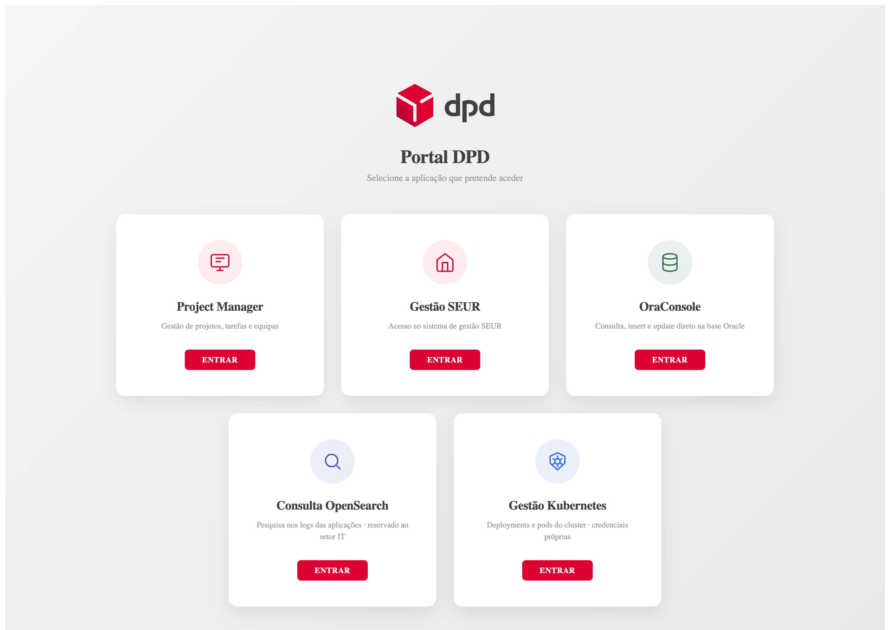
Se preferir ir direto, sem passar pelo portal, o endereço é
http://projetos.dpd.pt/login-kubernetes. É este que consta do email que recebe
quando a conta é criada.
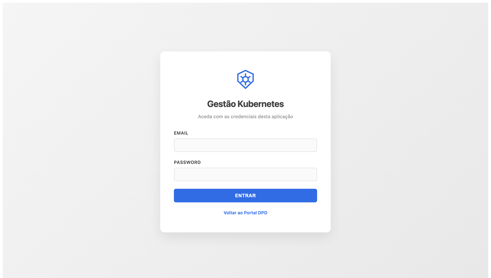
Não há registo próprio. As contas são criadas por um administrador da aplicação, que indica o nome, o email e o perfil. A password é gerada pelo sistema e enviada por email, já com o endereço de acesso — ninguém a escolhe à mão. Altere-a no primeiro acesso.
Se se esquecer da password, peça a um administrador que carregue em Enviar password na sua linha: recebe uma nova por email e a anterior deixa de funcionar.
Cada conta tem um de três perfis, que decide o que pode fazer:
| Perfil | Ver o cluster e os logs | Parar, arrancar, reiniciar e escrever informação | Gerir utilizadores e ver o registo global |
|---|---|---|---|
| Leitor | Sim | Não | Não |
| Operador | Sim | Sim | Não |
| Admin | Sim | Sim | Sim |
O perfil aparece sempre no canto superior direito, ao lado do seu nome. Quem tem perfil Leitor vê os botões de comando a cinzento e um aviso no topo da lista.
gateway, webapi,
qualidade e georouting. Nenhum perfil chega ao resto do cluster —
a limitação está nas permissões dadas no próprio cluster, não apenas no ecrã.
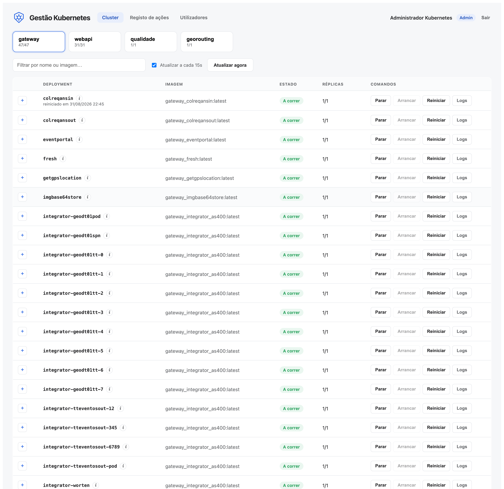
Um por namespace, com o número de serviços prontos sobre o total (por exemplo 47/47). Se algum estiver parado, aparece um aviso a amarelo no separador.
| A correr | Todas as réplicas estão prontas. É o estado normal. |
| A atualizar | Um rollout está a decorrer: já há réplicas prontas, mas ainda não todas. |
| Sem réplicas prontas | Deviam existir réplicas e nenhuma está pronta. O serviço está em baixo — abra os pods para ver a razão. |
| Parado | Está a zero réplicas, porque alguém o parou por aqui. |
A coluna Réplicas lê-se «prontas / desejadas». Num serviço parado aparece ainda «antes: N» — o número a que volta se o arrancar.
O botão + à esquerda de cada linha abre os pods desse serviço. O − volta a fechar.
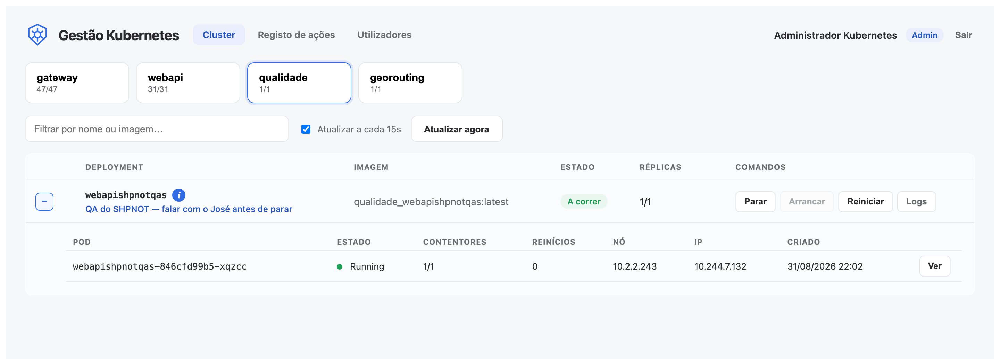
Vale a pena olhar para duas colunas:
CrashLoopBackOff,
ImagePullBackOff) em vez do estado geral.O botão Ver, à direita de cada pod, abre a consola desse pod — o mesmo que a aplicação escreve para o ecrã quando corre.
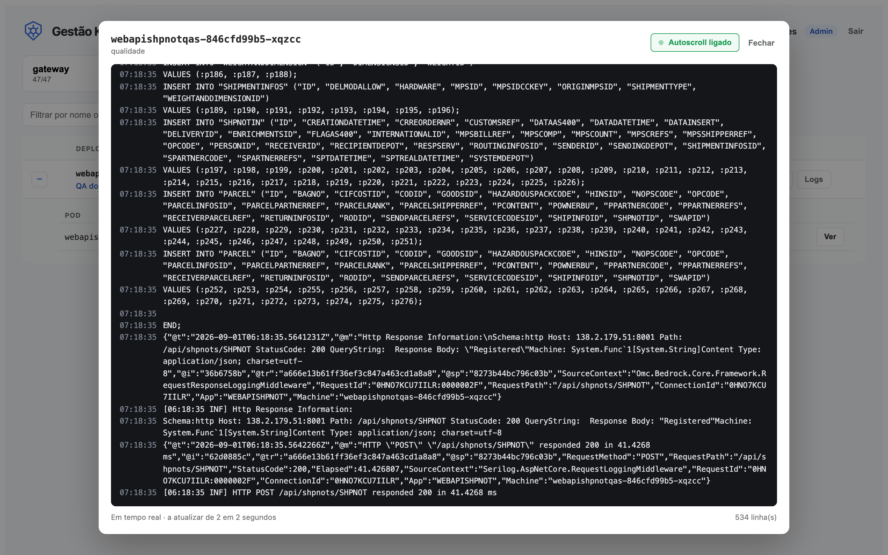
Ao abrir, o log corre em tempo real: a janela lê linhas novas de dois em dois segundos e acompanha o fim. O ponto verde a pulsar indica que está mesmo a ler.
Se o pod tiver mais do que um contentor, aparece um seletor no topo para escolher de qual quer ver a consola.
Cada linha tem três comandos. Não fazem o mesmo, e a diferença importa:
| Comando | O que acontece |
|---|---|
| Parar | Termina todas as réplicas: o serviço deixa de responder. O número de réplicas fica guardado, para o arranque o repor tal como estava. |
| Arrancar | Repõe as réplicas guardadas quando foi parado. Só está disponível se o serviço estiver parado. |
| Reiniciar | Substitui os pods um a um, sem parar o serviço. É o que se usa para o serviço reler configuração ou sair de um estado esquisito. |
Qualquer um deles pede confirmação, e a mensagem diz o que vai acontecer neste caso concreto:
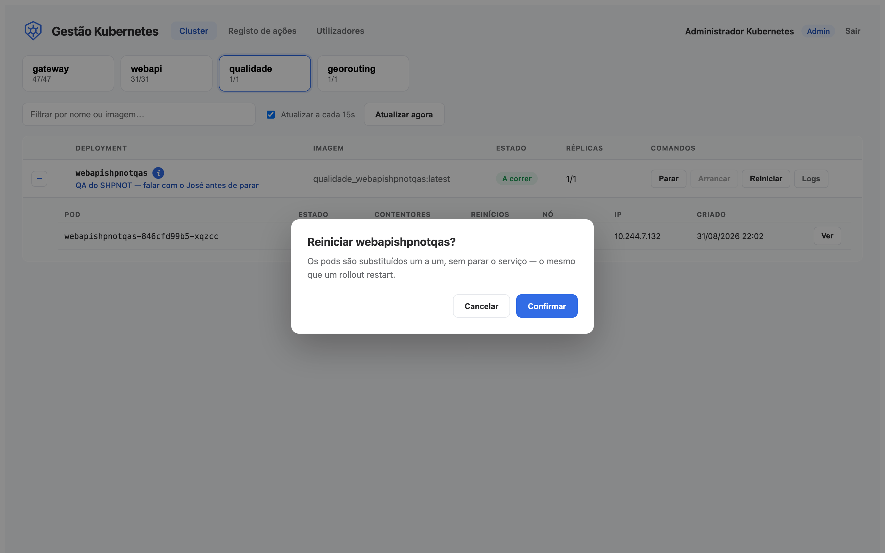
Depois de confirmar, a linha mostra «a executar…» e a lista atualiza-se sozinha alguns segundos depois. Um serviço a reiniciar passa por A atualizar antes de voltar a A correr.
O ícone i ao lado do nome abre uma ficha onde a equipa escreve o que for útil saber sobre aquele serviço: para que serve, cuidados a ter, quem é o dono, o que não fazer.
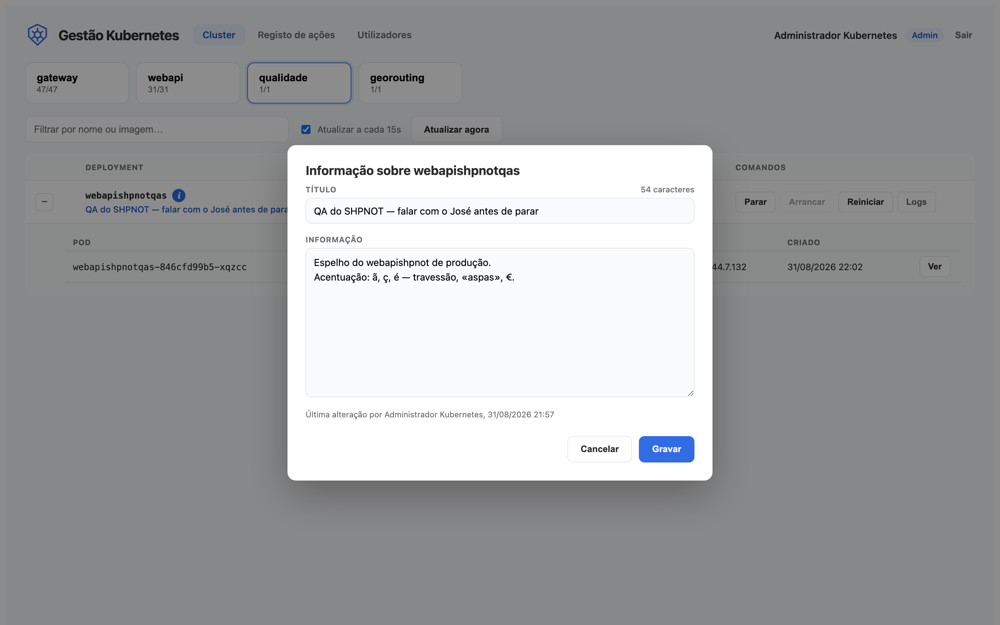
Quando um serviço já tem informação escrita, o ícone i fica preenchido a azul. Assim distingue-se «há aqui algo para ler» de «ninguém escreveu nada» sem ter de abrir nada.
Tudo o que se faz aqui fica registado: entradas na aplicação, entradas recusadas, comandos sobre serviços e alterações à informação. Cada linha diz quem, quando, sobre o quê, com que resultado e de que endereço.
O botão Logs, na linha de cada serviço, mostra só o que foi feito àquele serviço. Está aberto a todos os perfis — saber quem parou o quê é para ser transparente.
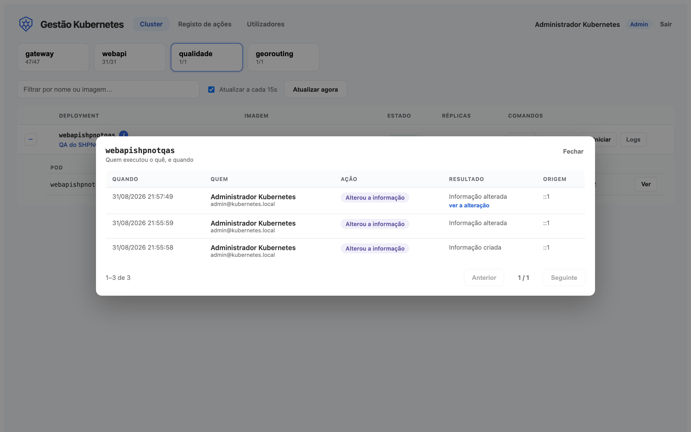
No menu de cima, Registo de ações mostra tudo, com filtros por tipo de ação e por utilizador. Só está disponível a quem tem perfil Admin, porque inclui as entradas de todos.
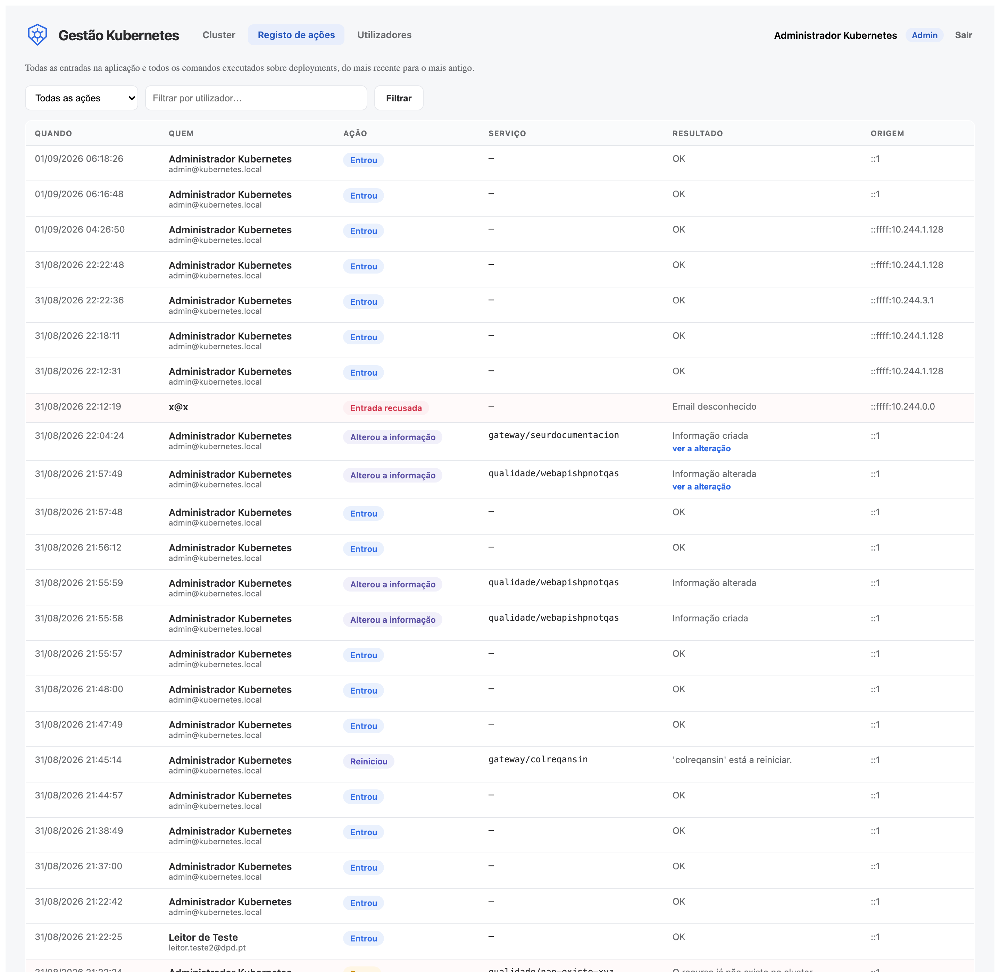
Nas linhas de alteração da ficha de um serviço aparece ver a alteração, que abre lado a lado o que estava escrito e o que ficou.
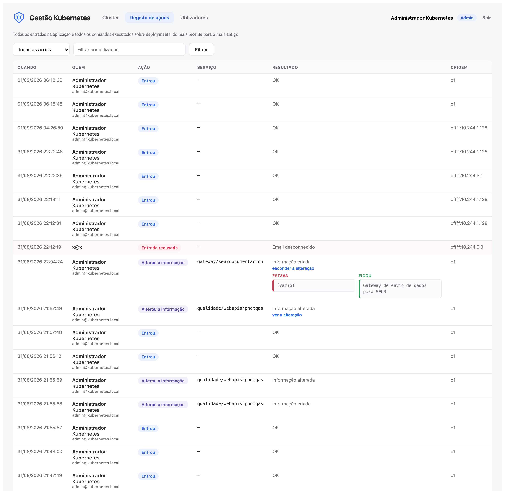
Reservado ao perfil Admin, no menu Utilizadores.
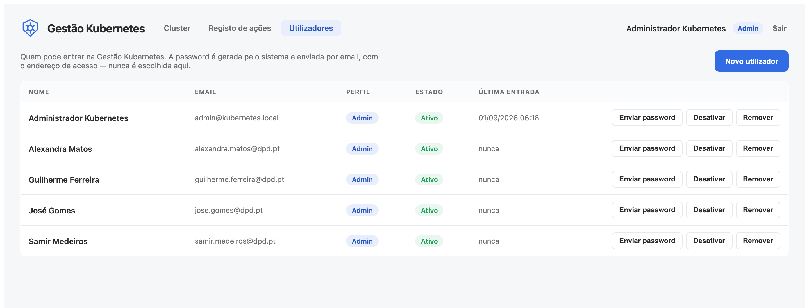
Em Novo utilizador, indique o nome, o email e o perfil. A password é gerada pelo sistema e enviada por email com o endereço de acesso.
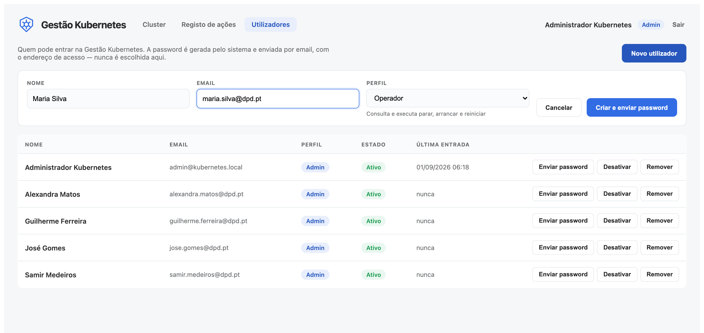
| Enviar password | Gera uma password nova e envia-a por email. A anterior deixa de funcionar. |
| Desativar | A pessoa deixa de entrar, mas continua na lista. É o que se usa quando alguém sai da equipa. |
| Remover | Apaga a conta de vez, sem recuperação. É para contas criadas por engano. O histórico de ações mantém-se. |
Não é possível desativar nem remover a própria conta.
Confirme que está a usar as credenciais desta aplicação e não as do Project Manager ou do SEUR. Se a conta tiver sido desativada, a mensagem é outra: «Conta de utilizador inativa». Em qualquer dos casos, fale com um administrador.
Normal ao fim de algum tempo sem atividade. Basta entrar outra vez.
O seu perfil é Leitor. Peça a um Admin que o mude para Operador, se for esse o caso.
Não é problema seu nem da sua conta: é a ligação entre a aplicação e o cluster. Avise a equipa de sistemas.
Mesma causa da mensagem anterior. Entre num namespace para ver o erro completo e passe-o à equipa de sistemas.
Carregue em Arrancar na mesma linha. Volta ao número de réplicas que tinha antes de ser parado. As duas ações ficam registadas.
Veja se o Autoscroll está desligado — desligado, a leitura está parada de propósito. Se estiver ligado e mesmo assim não avançar, é porque o pod não está a escrever nada.